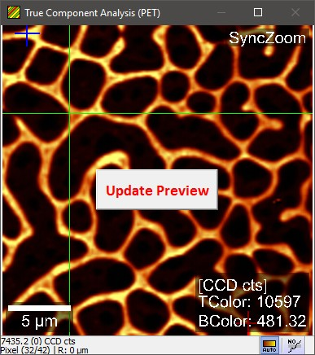

|
图像查看器外观
|

同步缩放：
如果开启了同步缩放模式，将显示此标签（可在环形菜单的相机部分中开启）。
更新预览（按钮）：
如果图像是计算对话框的预览，并且由于某些参数更改而不再有效，此按钮会显示出来。您只需点击此按钮即可计算/更新预览图像。
TColor / BColor：
如果开启了附加信息，将显示此标签。它将显示颜色标尺的最小值和最大值（可在环形菜单杂项视觉中开启；仅在颜色信息不是位图时可用）。
5 µm：
这是带有标签的颜色标尺。双击标尺可更改其颜色，或右键点击标尺更改更多选项。也可以使用环形菜单中的杂项视觉部分。
要将单位从 µm 更改为其他单位，请打开上下文菜单并更改空间解释对象。
状态栏：
状态栏第一行显示当前光标位置处图像的浮点值。
括号中可以看到当前光标位置的值与上一次左键点击的光标位置的值之间的差值。
第二行显示光标的像素位置以及当前光标位置与上一次左键点击的光标位置之间的空间距离。
自动颜色标尺（第一个工具按钮）：
点击执行自动颜色标尺。
右键点击可激活图像更改时的自动颜色标尺。
在测量期间会显示第二个自动颜色标尺工具按钮，该按钮允许仅使用最后更改行的值进行自动标尺。
行校正（第二个工具按钮）：
选择以下行校正模式之一：
数学描述参见：行校正（数学）